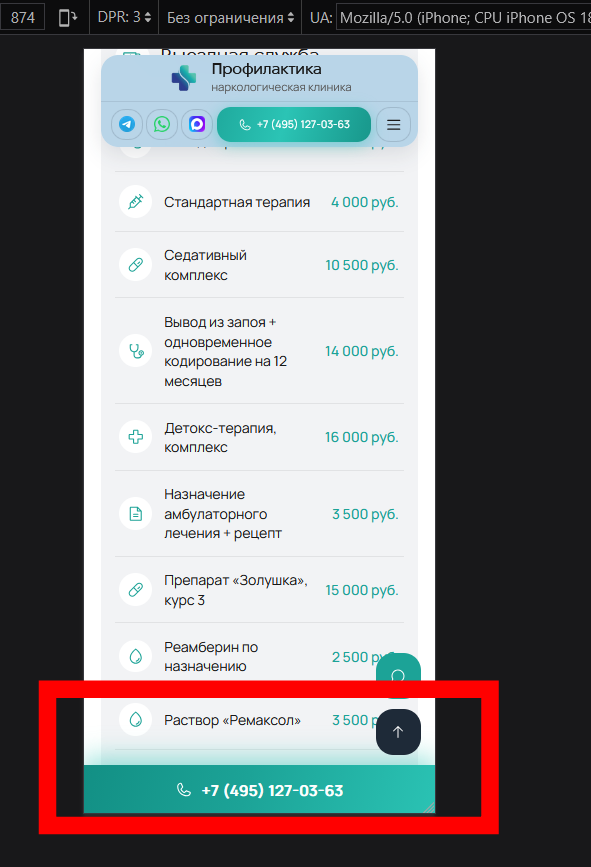
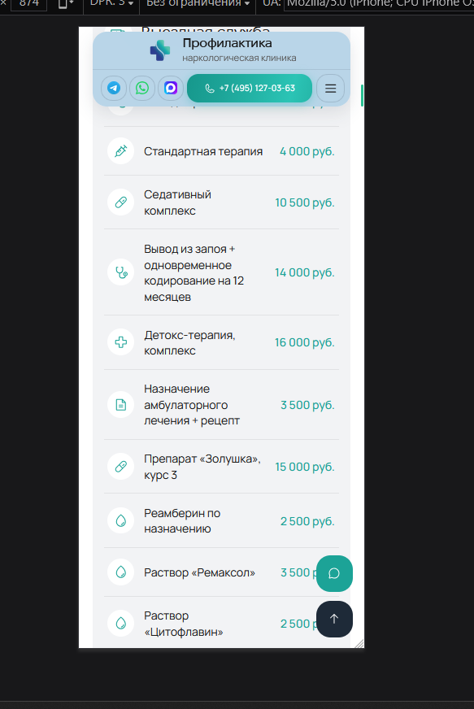
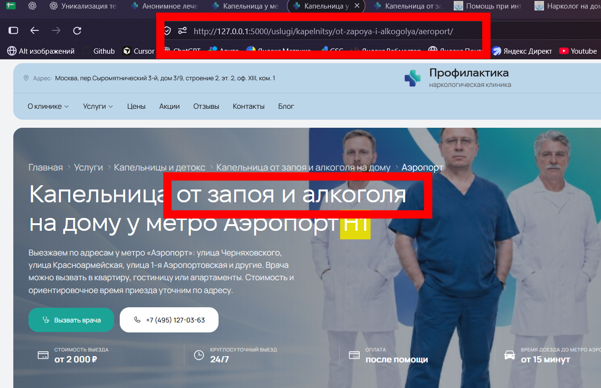

Рассчитано время доезда


Переделан блок «Этапы оказания помощи у [ЛОКАЦИЯ]»


Подготовлен бриф по УТП для каждого типа услуги

Переделан блок «Какие услуги может назначить или провести врач на дому»

Сначала сквозные блоки, потом SEO (как вызвать, оказываемые услуги, статистика и т.д.)

Добавлена уникализация текстов под H1 для гео-страниц


Выезд за МКАД убран со страниц Москвы, округов и метро

Убрана кнопка телефона для телефонов внизу экрана




«Капельница от запоя и алкоголя на дому» теперь просто «Капельница на дому»

